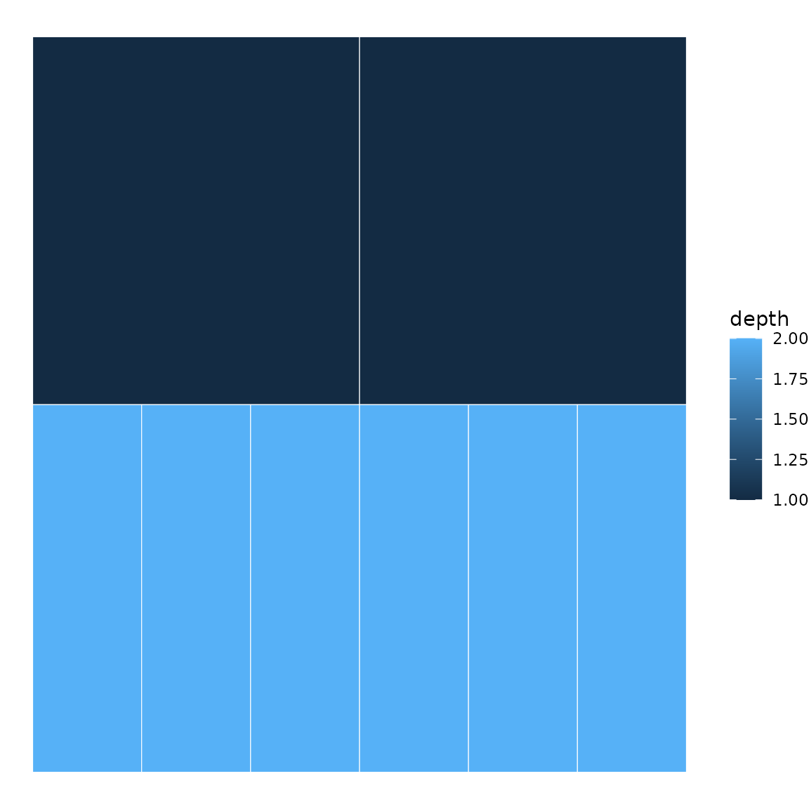
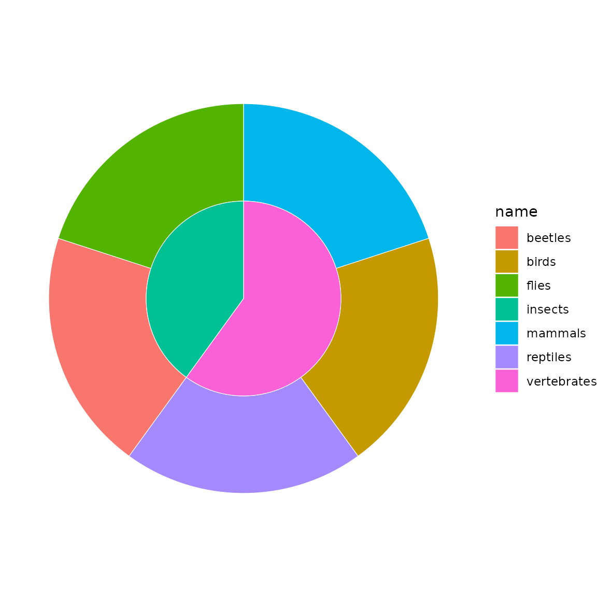
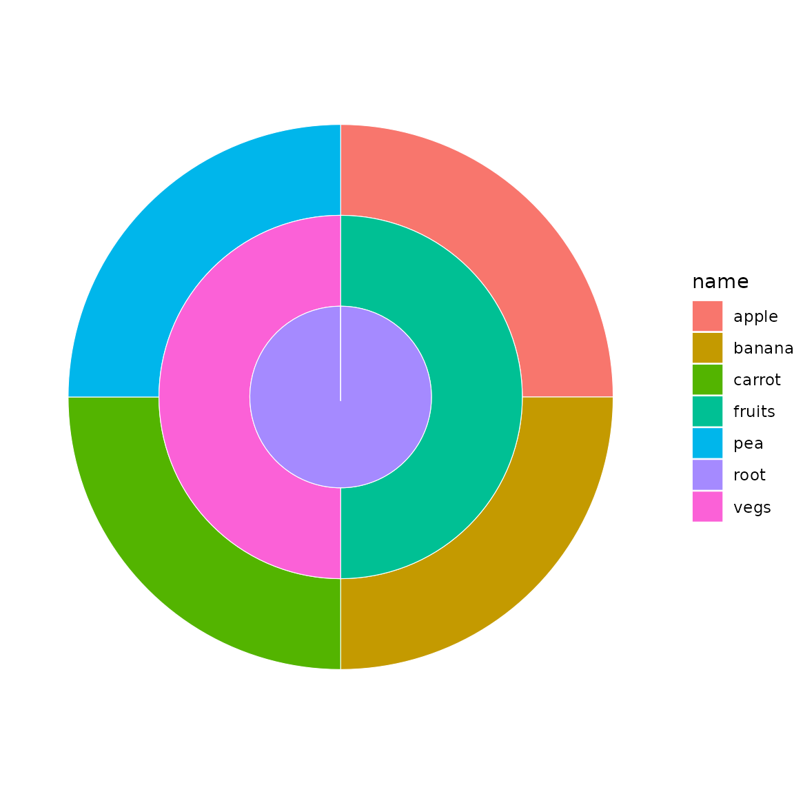
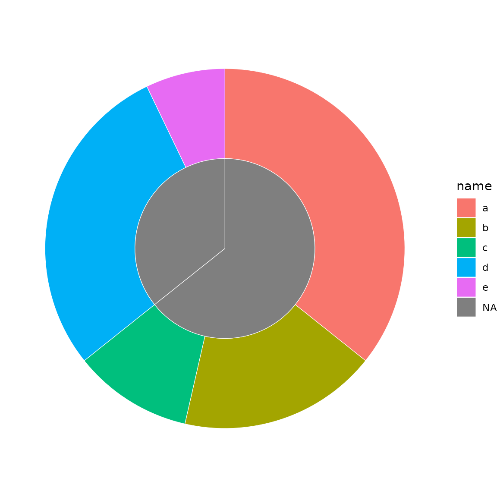
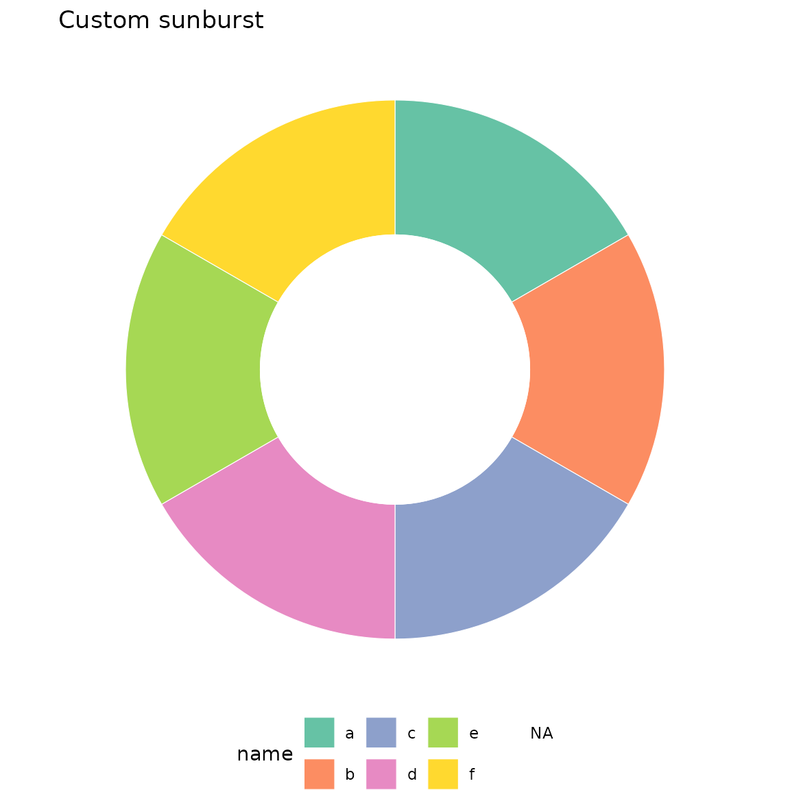
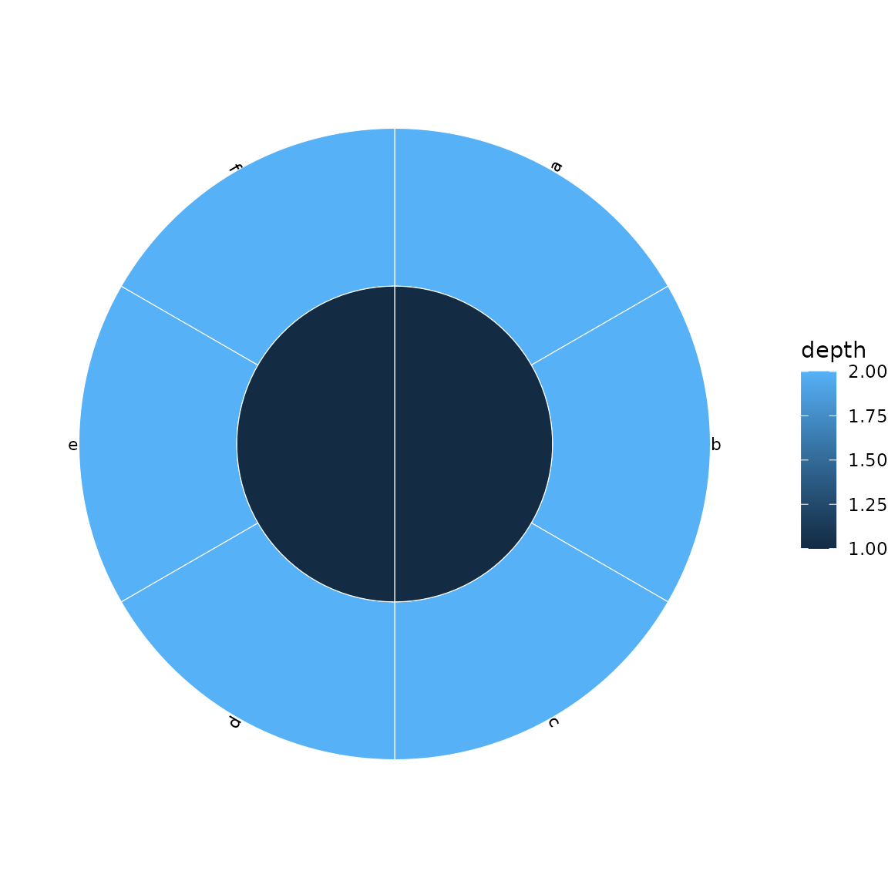

Overview
ggsunburstR creates sunburst and icicle plots from hierarchical data using ggplot2. It accepts multiple input formats and produces standard ggplot2 objects you can customise freely.
Basic usage
The workflow has two steps:
-
Prepare data with
sunburst_data() -
Plot with
sunburst()oricicle()
library(ggsunburstR)
# Parse a Newick tree string
sb <- sunburst_data("((a, b, c), (d, e, f));")
# Sunburst plot
sunburst(sb, fill = "depth")
# Same data as an icicle plot
icicle(sb, fill = "depth")
Input formats
Newick strings
The most common input for phylogenetic or hierarchical trees:
sb <- sunburst_data("((mammals, birds, reptiles)vertebrates, (beetles, flies)insects)animals;")
sunburst(sb, fill = "name")
Data frames
Use a data frame with parent and child
columns:
df <- data.frame(
parent = c(NA, "root", "root", "fruits", "fruits", "vegs", "vegs"),
child = c("root", "fruits", "vegs", "apple", "banana", "carrot", "pea")
)
sb <- sunburst_data(df)
sunburst(sb, fill = "name")
Value-weighted sectors
By default, all leaves get equal angular width. Use
values to size sectors proportionally:
sb <- sunburst_data(
"((a, b, c), (d, e));",
values = c(a = 10, b = 5, c = 3, d = 8, e = 2)
)
sunburst(sb, fill = "name")
Customisation with ggplot2
Since the output is a standard ggplot2 object, you can add any ggplot2 layer or theme:
sb <- sunburst_data("((a, b, c), (d, e, f));")
sunburst(sb, fill = "name") +
ggplot2::scale_fill_brewer(palette = "Set2") +
ggplot2::labs(title = "Custom sunburst") +
ggplot2::theme(legend.position = "bottom")
Labels
Add leaf labels with show_labels = TRUE:
sb <- sunburst_data("((a, b, c), (d, e, f));")
sunburst(sb, fill = "depth", show_labels = TRUE)
Options
Key parameters for sunburst_data():
-
values— named numeric vector or column name for sector sizing -
branchvalues—"remainder"(default) or"total" -
leaf_mode—"actual"(default) or"extended" -
ladderize— sort by descendant count -
ultrametric— equalise leaf depths -
xlim— angular span (default 360) -
rot— rotation offset in degrees